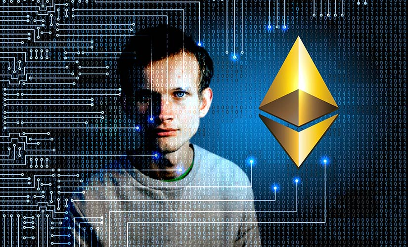

Ласкаво просимо до нашої галереї важливих подій в криптовалютному світі!
Тут ви зможете переглянути найважливіші події та новини світу криптовалют.
У 2010 році Ласло Ханеч купив дві піци за 10 000 біткоїнів, що на той час було еквівалентно приблизно 41 долару США.
Ця покупка стала відомою як перша комерційна транзакція з використанням біткоїнів і відзначається як важлива подія в історії криптовалют.

У 2025 році біткоїн досягнув рекорду своєї вартості, що стало важливою подією в історії криптовалют.

У 2015 році Ethereum впровадив смарт-контракти, що дозволило створювати децентралізовані додатки та розширило можливості використання блокчейн-технології.